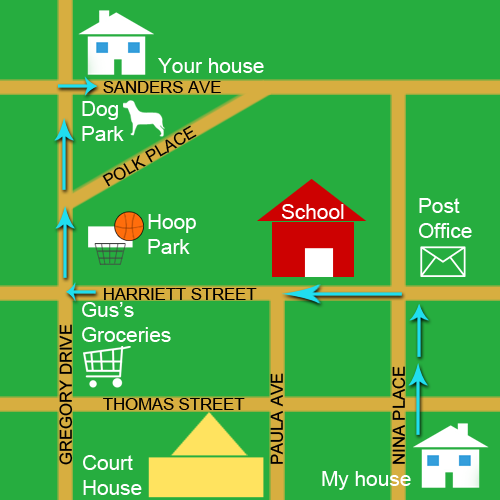
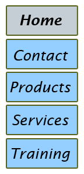

Logo This is a logo for the fictional company Tip O' the Hat Snowman Delivery. Created in Photoshop. |
|
Map This map was created in Photoshop. Lines, shapes, stamps, and text were used to create directions from My House to Your House. |
 |
Buttons Home, Contact, Products, Services, and Training buttons. Created in Photoshop. |
 |